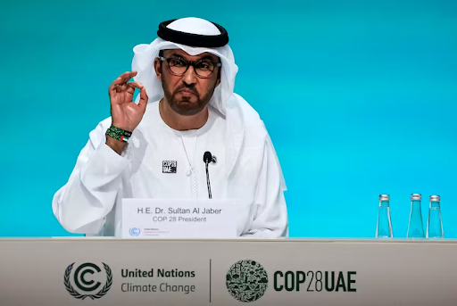

December 5th, 2023
Dubai, the United Arab Emirates, recently hosted COP28 (November 30 to December 13) , the largest UN Climate Change Conference to date. Boasting 85,000 participants and over 150 Heads of State and Government, this monumental event showcased global efforts to combat climate change and marked the conclusion of the first-ever “global stocktake” under the Paris Agreement.
COP28 unveiled the outcomes of the first “global stocktake,” revealing sluggish progress in climate action areas. The global community responded with a resounding decision, urging governments worldwide to expedite the transition from fossil fuels to renewable energy sources like wind and solar power. This important directive sets the stage for accelerated climate action across the board by 2030.
Sultan Ahmed Al Jaber, Minister of Industry and Advanced Technology and UAE Special Envoy for Climate Change, assumed the role of COP28 President-Designate. The conference, set to focus on four paradigm shifts, aims to fast-track the energy transition, revolutionize climate finance, prioritize nature and people, and mobilize for the most inclusive COP ever.

In a historic move, negotiators from nearly 200 countries acknowledged the necessity to transition away from fossil fuels at COP28. While not fully turning the page on the fossil fuel era, UN Climate Change Executive Secretary Simon Stiell declared, "this outcome is the beginning of the end." UN chief António Guterres emphasized the need for a just and equitable end to the fossil fuel era, with robust support for developing countries in the transition.
Canada pledged its full support to COP28, aligning with the Paris Agreement's long-term goals. Minister Steven Guilbeault, leading Canada's delegation, emphasized the country's commitment to diverse perspectives and inclusive climate leadership. The delegation, featuring representatives from parliament, civil society, business, and Indigenous communities, demonstrates Canada's inclusive approach to addressing climate change.
However, COP28 faced criticism, notably surrounding its president, Sultan Al Jaber, CEO of the Abu Dhabi National Oil Company (ADNOC). Concerns over a potential conflict of interest arose, given Al Jaber's ties to a major fossil fuel entity. Accusations of greenwashing, limited criticism of Emirati corporations, and alleged covert access to conference emails further fueled apprehensions about the conference's integrity.
The final agreement reached at COP28 commits signatory countries to transition away from carbon energy sources in an equitable manner, aiming for net-zero emissions by 2050. While hailed as historic, the pact faced criticism for lacking a clear commitment to either fossil fuel phase-out or phase-down. Notably, China and India did not sign the pledge to triple their renewable energy output, opting for continued reliance on coal power.
Moreover, the agreement faced criticism for its lack of clarity on phasing out or down fossil fuels. Despite aiming for progress with a threefold increase in renewable energy and a twofold boost in energy efficiency by 2030, the agreement falls short on addressing the critical issue of coal, merely rehashing COP26's call for an "acceleration of efforts towards a phasedown." The inclusion of "transition" fuels, potentially including natural gas, in the final text raises concerns among climate experts and activists due to its methane emissions. While there's increased acknowledgment of the need for adaptation measures, details on funding for poorer nations remain elusive. Although progress is being made, it is not nearly enough. The world will continue to suffer from the impacts of climate change, perhaps to an even greater extent. Grappling with this reality will be the narrative for forthcoming COPs. Now, was COP28 a success? Well, the overall achievement of the talks, particularly regarding final outcomes, remains a matter of ongoing debate. It seems only time will tell as the world watches.